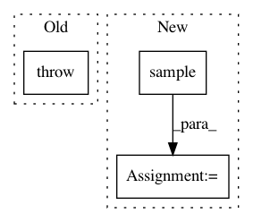

6b9ccdbadbca088c0e6b5be1d08848cad0718bbc,torch_geometric/nn/models/metapath2vec.py,MetaPath2Vec,__positive_sampling__,#MetaPath2Vec#Any#,72
Before Change
return emb if subset is None else emb[subset]
def __positive_sampling__(self, subset):
raise NotImplementedError
def __negative_sampling__(self, subset):
subsets = []
for keys in self.metapath:
After Change
subsets = []
for keys in self.metapath:
adj = self.adj_dict[keys]
subset = adj.sample(num_neighbors=1, subset=subset).squeeze()
subsets.append(subset)
out = torch.stack(subsets, dim=-1).to(device)
out.add_(self.offset[1:].view(1, -1))
return out
In pattern: SUPERPATTERN
Frequency: 5
Non-data size: 3
Instances
Project Name: rusty1s/pytorch_geometric
Commit Name: 6b9ccdbadbca088c0e6b5be1d08848cad0718bbc
Time: 2020-05-31
Author: matthias.fey@tu-dortmund.de
File Name: torch_geometric/nn/models/metapath2vec.py
Class Name: MetaPath2Vec
Method Name: __positive_sampling__
Project Name: asyml/texar
Commit Name: af461df627ef660d1a71b6981dedb4e4b504ba9a
Time: 2017-09-25
Author: junxianh2@gmail.com
File Name: txtgen/modules/connectors/connectors.py
Class Name: StochasticConnector
Method Name: _build
Project Name: openai/gym
Commit Name: 4519a6ffe377ccf370e507c705709bc673c904d5
Time: 2016-05-03
Author: mail@jonasschneider.com
File Name: gym/core.py
Class Name: Env
Method Name: step
Project Name: pyprob/pyprob
Commit Name: 1c758ba9d6c14d9b9d3599e44c3508e2692d8d35
Time: 2018-09-28
Author: atilimgunes.baydin@gmail.com
File Name: pyprob/distributions/empirical.py
Class Name: Empirical
Method Name: sample
Project Name: rusty1s/pytorch_geometric
Commit Name: 3697053ea6eabb77909d9b43044d784098b48bb9
Time: 2020-05-18
Author: matthias.fey@tu-dortmund.de
File Name: torch_geometric/nn/models/metapath2vec.py
Class Name: MetaPath2Vec
Method Name: __positive_sampling__